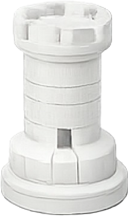
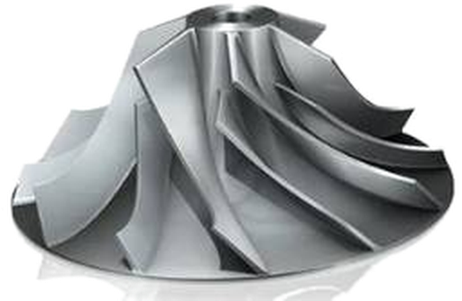
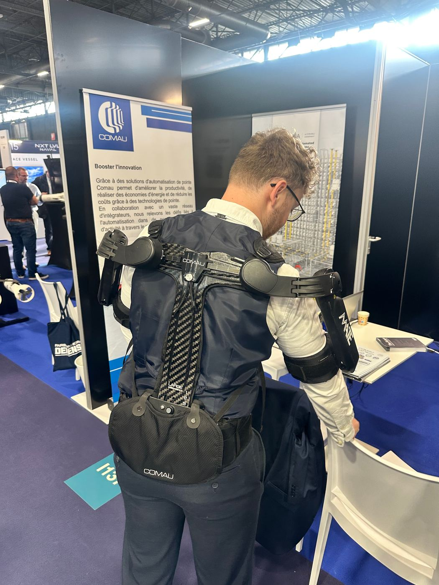
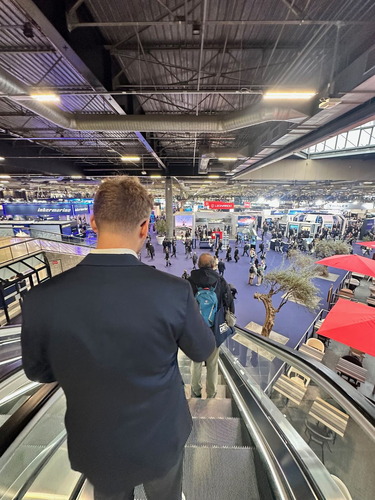

Impression 3D& usinage CNC
Prototypes, pièces techniques et petites séries, de la pièce unique à la production. Impression 3D SLS, FDM et SLA, fraisage CNC, scan 3D et modélisation : tout est fait dans notre atelier. Devis sous 24 h.


Nos procédés de fabrication
Le procédé se choisit selon votre cahier des charges : résistance, précision, état de surface, quantité, budget.
SLS
Pièces fonctionnelles robustes en nylon, sans supports. Formes complexes et séries.
Explorer →Dépôt de filamentFDM
Prototypes, outillages, grandes pièces et multicolore. Du PLA au PEEK et à l'ULTEM.
Explorer →StéréolithographieSLA
Très haute définition, surfaces lisses, petits détails : maquettes et pièces d'aspect.
Explorer →FraisageCNC
Pièces usinées précises dans la masse : aluminium, laiton, bronze, titane, plastiques techniques.
Explorer →NumérisationScan 3D
Rétro-conception, reproduction de pièces introuvables, contrôle de forme.
Explorer →Gravure laserLaser
Personnalisation, marquage, numérotation, découpe et signalétique.
Explorer →Bride percée Ø80Glisser pour faire pivoter
Les machines de l'atelier

Supermaker SLS1518
Supermaker SLS1518 : impression SLS industrielle compacte, volume 150×150×180 mm, PA11, PA12, TPU, CF, GF, recyclage poudre intégré.
Ouvrir la fiche →
Supermaker SLS3540 Pro
Supermaker SLS3540 Pro : impression SLS industrielle grand format, volume 350×350×430 mm, PA11, PA12, TPU, CF, GF, recyclage poudre intégré.
Ouvrir la fiche →
Bambu Lab H2C
La Bambu Lab H2C imprime en FDM jusqu'à 24 couleurs, idéale pour vos pièces multicolores et multi-matériaux.
Ouvrir la fiche →
Bambu Lab X1C
Bambu Lab X1C : impression FDM haute vitesse, volume 256×256×256 mm, idéale pour la production en série et le prototypage rapide.
Ouvrir la fiche →
Prusa Core One
Prusa Core One : imprimante FDM industrielle compatible ASA, ABS, PC et PA, pour vos prototypes et petites productions.
Ouvrir la fiche →
Modix Big Meter
Impression 3D de très grande taille avec la Modix Big Meter.
Ouvrir la fiche →Ils nous ont confié leurs projets


Matériaux, du PLA au PEEK
29 fiches matériaux détaillées : propriétés, avantages, limites et machines compatibles.








Du fichier à la pièce
Envoyez
Fichier STEP, STL ou 3MF, plan, croquis… ou la pièce à scanner.
Analyse & devis
Instantané avec fichier 3D, personnalisé sous 24 h.
Fabrication
Procédé et matière choisis selon vos contraintes.
Livraison
Envoi ou retrait à l'atelier de Welkenraedt.
Nos réalisations

Pièce en polypropylène pour une logopède
Outil de rééducation sur mesure pour logopède, reproduit en polypropylène par impression 3D et adapté aux besoins des patients.
Ouvrir la fiche →
Engrenage de hachoir reproduit en 3D
Engrenage de hachoir cassé reproduit en PLA : rétroconception en 1 h, pièce prête en moins de 48 h.
Ouvrir la fiche →
Pièces d'Audi S3 reproduites en PAHT-CF
Reproduction de pièces Audi S3 endommagées en PAHT-CF et PLA : grille de pare-chocs et caches logo S3.
Ouvrir la fiche →
Rails miniatures pour la maquette Infrabel
Rails miniatures en PLA imprimés en 3D pour la maquette d'inauguration d'Infrabel.
Ouvrir la fiche →
Semelles de tabourets pour des gîtes à Herve
Semelles de tabourets 40 cm en PLA noir, imprimées sur mesure pour des gîtes Airbnb à Herve : 24 h par pièce, prototype offert.
Ouvrir la fiche →
Pic de barrière reproduit en ASA
Pic de barrière décoratif cassé, redessiné à partir de photos et réimprimé en ASA résistant aux UV sur Bambu Lab X1C.
Ouvrir la fiche →Salons et événements
On va à la rencontre de l'industrie : Euronaval pour le naval et la défense, Formnext pour la fabrication additive, Batibouw pour la construction.





O&D Impression 3D en 8 réponses
Les informations essentielles sur notre atelier, en un coup d'œil.
Qui sommes-nous ?
O&D Impression 3D est un atelier de fabrication belge fondé en 2021 par Owen Schimmenti et Donovan Waucomont.
Où se trouve notre atelier ?
Rue Trois Bourdons 52E, 4840 Welkenraedt, en province de Liège. Nous travaillons pour Liège, Verviers, Eupen, Spa, Huy, Seraing et toute la Belgique.
Que fabriquons-nous ?
Impression 3D SLS, FDM et SLA, usinage CNC, scan 3D, modélisation 3D et gravure laser : prototypes, pièces techniques, pièces de remplacement et petites séries.
Avec quelles machines travaillons-nous ?
11 machines dans notre atelier : Supermaker SLS1518, Supermaker SLS3540 Pro, Bambu Lab H2C, Bambu Lab X1C, Prusa Core One, Modix Big Meter, INTAMSYS Funmat HT, Anycubic Photon M7 Max, ToolDance X1, Scanner 3DeVOK MT, xTool F1.
Quelles matières utilisons-nous ?
29 matières documentées : nylon PA12 et PA11, TPU, PLA, PETG, ABS, ASA, PEEK, PEKK, ULTEM, aluminium, laiton, cuivre, bronze, titane et plastiques techniques.
Comment obtenir un devis ?
Devis instantané en ligne à partir d'un fichier 3D (STL, STEP, 3MF), ou devis personnalisé sous 24 h.
Pour qui travaillons-nous ?
Entreprises, collectivités et créateurs : par exemple Walibi, Infrabel, la Ville de Spa ou Lx Cars.
Comment nous contacter ?
Par téléphone au 0471 68 66 53, par e-mail à o.d3dindustrie@gmail.com ou via le formulaire de contact.
Préparer votre projet
Quiz : quelle technologie ?
Quelques questions pour savoir quel procédé convient à votre pièce.
Ouvrir →OutilDevis instantané
Déposez votre STL, choisissez la matière : estimation immédiate.
Ouvrir →OutilComparateur de matériaux
PLA vs PETG, PEEK vs PEKK vs Ultem, FDM vs SLS vs SLA…
Ouvrir →OutilGuide matériaux & technologies
Le guide complet pour choisir procédé et matière.
Ouvrir →Une pièce à fabriquer ?
Envoyez votre fichier 3D ou décrivez votre besoin : devis instantané avec fichier, devis personnalisé sous 24 h.